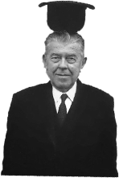
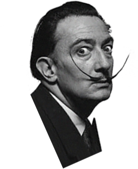
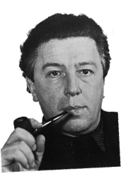
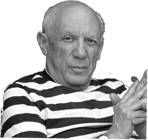
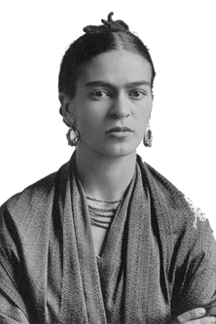
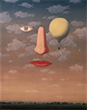
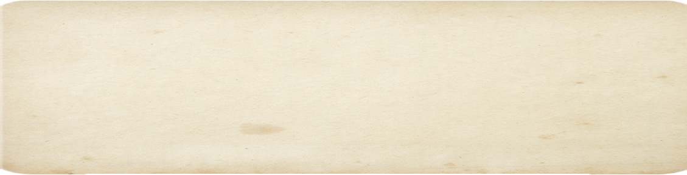

``





Rene Magritte
René FrançoRené François Ghislain Magritte (21 November 1898 – 15 August 1967) was a Belgian Surrealist artist. He became well known for creating a number of witty and thought-provoking images. Often depicting ordinary objects in an unusual context, his work is known for challenging observers' preconditioned perceptions of reality. His imagery has influenced pop art, minimalist art and conceptual art.

Salvador Dali
Salvador Domingo Felipe Jacinto Dalí i Domènech, Marquis of Dalí de Púbol (11 May 1904 – 23 January 1989) was a Spanish Surrealist painter born in Figueres, Catalonia, Spain.
Dalí was a skilled draftsman, best known for the striking and bizarre images in his work. His painterly skills are often attributed to the influence of Renaissance masters.
Andre Breton
André Robert Breton (18 February 1896 – 28 September 1966) was a French writer, poet and anti-fascist. He is known best as the co-founder, leader, principal theorist and chief apologist of Surrealism. His writings include the first Surrealist Manifesto (Manifeste du surréalisme) of 1924, in which he defined surrealism as "pure psychic automatism".
Pablo Picasso
Pablo Ruiz Picasso ( 25 October 1881 – 8 April 1973) was a Spanish painter, sculptor, printmaker, ceramicist, stage designer, poet and playwright who spent most of his adult life in France. Regarded as one of the most influential artists of the 20th century, he is known for co-founding the Cubist movement, the invention of constructed sculpture, the co-invention of collage, and for the wide variety of styles that he helped develop and explore.
Frida Kahlo
Frida Kahlo (Spanish pronunciation born Magdalena Carmen Frida Kahlo y Calderón; 6 July 1907 – 13 July 1954) was a Mexican painter known for her many portraits, self-portraits, and works inspired by the nature and artifacts of Mexico. Inspired by the country's popular culture, she employed a naïve folk art style to explore questions of identity, postcolonialism, gender, class, and race in Mexican society. Her paintings often had strong autobiographical elements and mixed realism with fantasy. In addition to belonging to the post-revolutionary Mexicayotl movement, which sought to define a Mexican identity, Kahlo has been described as a surrealist or magical realist.
